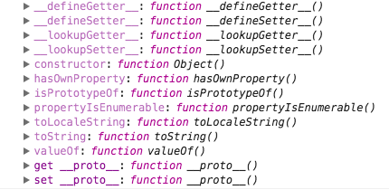
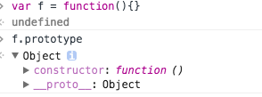

__proto__
js的原型链继承很简单，对任意一个object，都有__proto__属性，当获取这个对象的属性或者方法时，现在对象本身去查找，如果不存在，则往它的__proto__上查找，因为__proto__本身也是一个object，所以如果没找到，则往__proto__的__proto__上查找，跟沿着一条链条走一样，直到找到返回，或者__proto__为null或undefined找到了尽头。
原型链不可能无止尽的延伸，所以js中有一个默认的object，它的__proto__就是undefined，除非我们强制打断原型链，否则最终都会查找到这个object上，它是长这个样子的,可以看到它是没有__proto__属性的

我们可以对一个object的__proto__属性随意赋值，但如果赋成null或者undefined，则它的__proto__属性变成了undefined，如果赋成基础数据类型，并不会改变其__proto__属性
__proto__来源
如果我们没对object的__proto__赋值，则它的__proto__来源于使用Object.create方法调用时传给他的参数，虽然构造一个object有好几种写法，例如
var a = {}
var b = new f();
var c = Object.create(proto)
但它们实际上都是执行了Object.create，例如var a = {}和var a = Object.create(Object.prototype)是一模一样的，而var b = new f()则基本可以认为等同于var b = Object.create(f.prototype)。所以上面例子里，a的__proto__是Object.prototype, b的__proto__是f.prototype, c的__proto__是proto
function的prototype
我们经常通过function来构造一个object,这种情况使用了该function的prototype来作为Object.create的参数，如果我们没有给function指定一个prototype，则它默认的prototype是这样的

可以看到，function默认的prototype有一个属性constructor指向函数自己，它的__proto__就是我们前面提到的原型链尽头的那个object（真该给他取个什么名字才好），当然我们可以给function指定一个prototype，而不使用它默认的，那就是我们在js中实现继承的办法。
function本身也是一个对象，所以上图里f也有__proto__属性，它的__proto__就是Function.prototype。Function是javascript解释器提供的实现，就不用再去追究它的prototype是什么了。
使用原型链实现继承
知道原型链是什么东西之后，就可以开始实现继承了。ES6开始有了class和extends关键字，就可以不用手动实现继承，但在ES6之前，我们需要自己来实现，例如
var base = {
prop1:1,
prop2:{
a:1
},
func:function(){
console.log("in base...");
}
}
function Derived(){
}
Derived.prototype = base;
Derived.prototype.constructor = Derived;
var d1 = new Derived();
var d2 = new Derived();
d1.func();
d2.func();
console.log(d1.prop2.a);
d1.prop2.a = 2;
console.log(d2.prop2.a);
上面代码里，d1,d2是子类Derived的实例，它们继承了base里的属性和方法，所以可以直接调用d1.func()，也可以直接获取和设置d1.prop2.a的值，但也很容易发现问题，就是我们修改了d1.prop2.a的值，结果d2.prop2.a的值也改变了。prototype上的属性和方法，对于子类的实例是公共的，这是需要注意，容易出问题的地方。
这里顺便牵扯到一个问题，我们都知道object的constructor属性指向它的构造函数，所以在设定prototype时，必须再将prototype.constructor指向构造函数。就是上面代码里的
Derived.prototype.constructor = Derived;
如果没有注释掉的那句，则d1.constructor就不是Derived，而是变成了function Object(){[native code]}了
因为ES6之前没有原生的继承机制，很多地方都使用了John Resig的一种简单实现方式，使用25行代码实现了extends功能。
缩短原型链
如果原型链过长，可能会带来性能问题。所以需要注意的是尽量不要去扩展内置类型的原型。直接获取属性和for in函数都会查询原型链，如果想避免查询原型链，可以使用hasOwnProperty方法来判断
使用var a = Object.create(null) 代替 var a = {}的区别，前者明确将__proto__设置为null，查找属性时就不会再往原型链上查找了，后者__proto__其实是Object.prototype